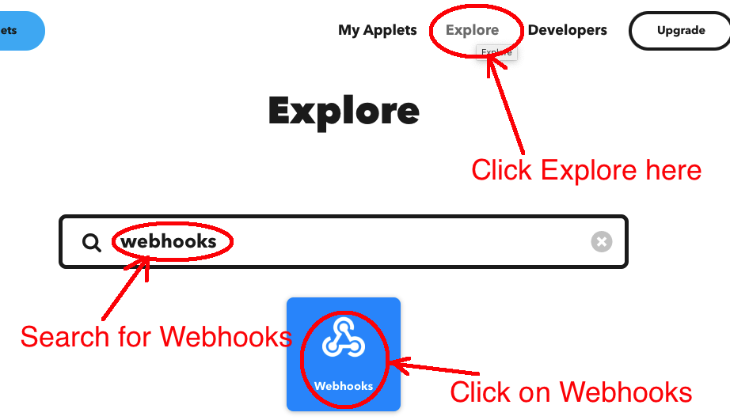
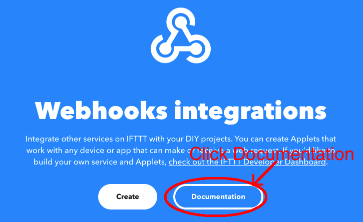
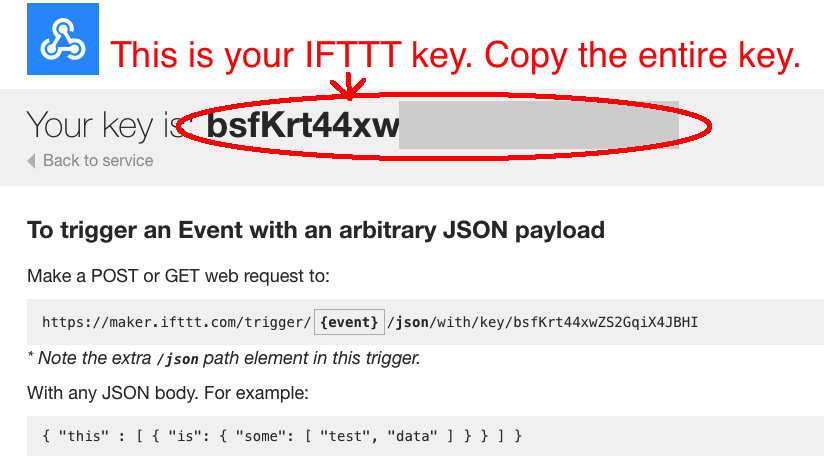
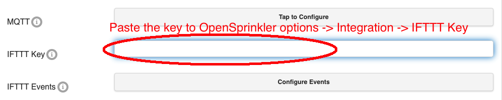
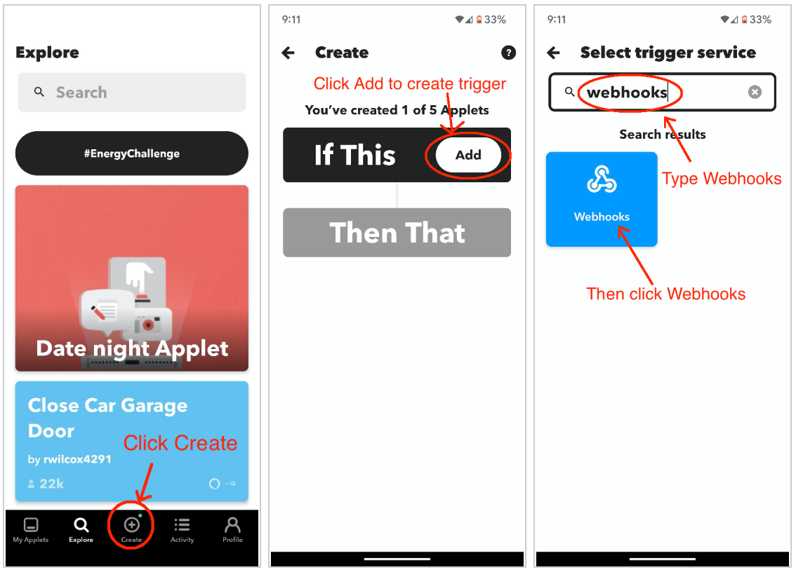
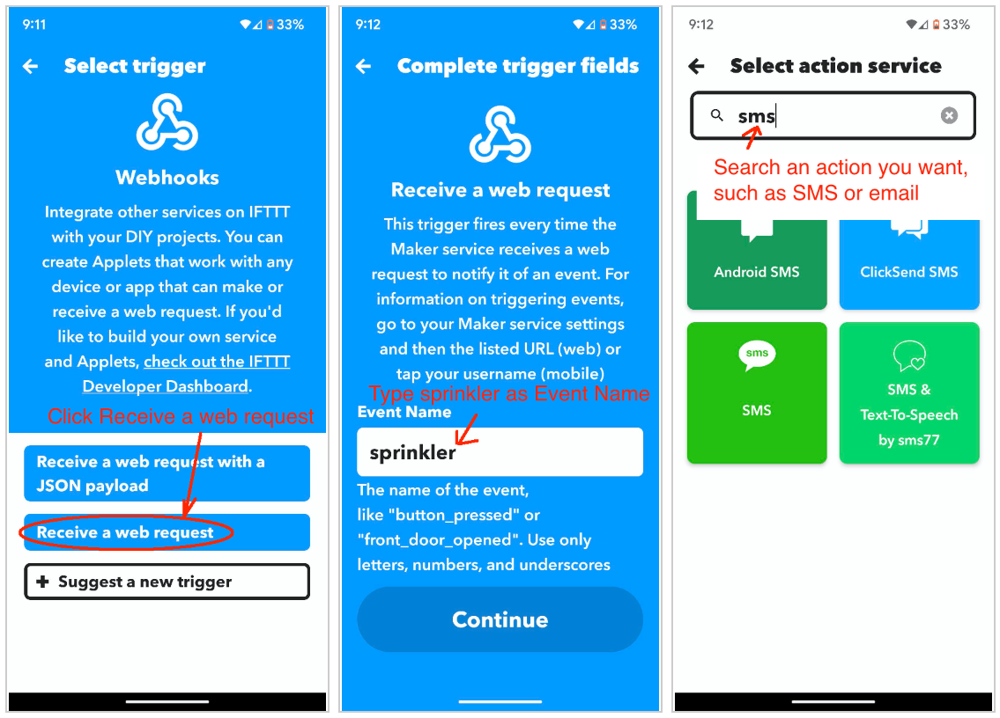
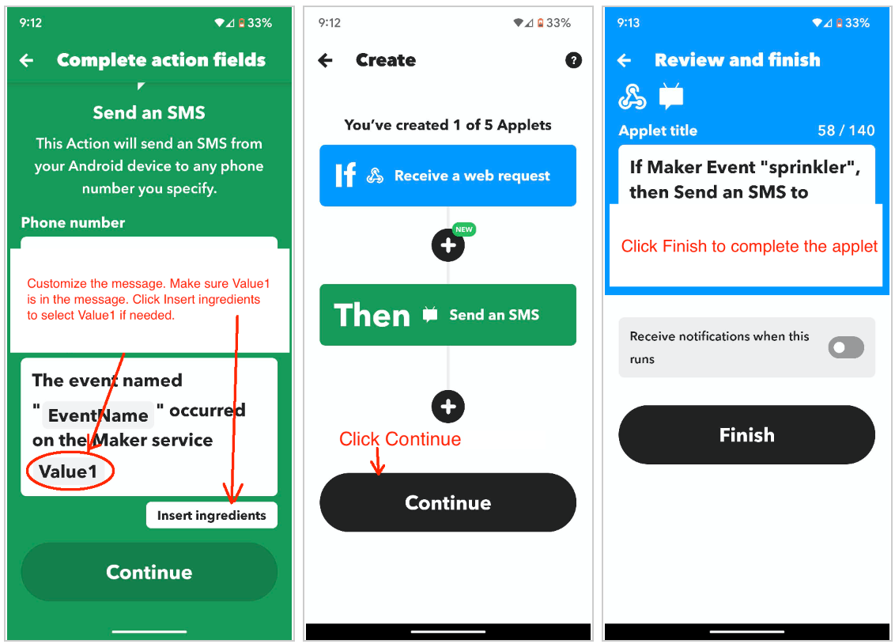

Setting Up IFTTT Notifications
OpenSprinkler can send notification events to IFTTT through the IFTTT Webhooks service. An IFTTT Applet can then forward those events as push notifications, email, SMS, or any other action supported by IFTTT.
IFTTT subscription
IFTTT currently requires a paid plan for Applets that use the Webhooks service. For a no-subscription alternative, use email notifications.
Step 1: Create an IFTTT Account and Obtain a Webhooks Key
- Sign in to the IFTTT website or mobile app, or create an account.
-
Open Explore, search for Webhooks, and select the Webhooks service.


-
If prompted, connect the Webhooks service. In its About Webhooks section, select Documentation.

-
Copy the Webhooks key shown on the documentation page. Treat this key as a password and do not publish it.

If the key stops working, regenerate it in the IFTTT Webhooks settings and update the key in OpenSprinkler.
Step 2: Create an IFTTT Applet
An IFTTT Applet connects a trigger (If This) to an action (Then That). OpenSprinkler supplies the trigger through Webhooks.
- Select Create in IFTTT.
-
For If This, select Webhooks, then choose Receive a web request.

-
Enter
sprinkleras the Event Name, then select Create trigger. This name is fixed by the OpenSprinkler firmware and is case-sensitive.
-
For Then That, choose the desired action, such as a push notification, email, or SMS.
-
In the action's message field, insert the Value1 ingredient. OpenSprinkler places the complete notification message in
Value1.
-
Save and enable the Applet.
Step 3: Configure OpenSprinkler
On the OpenSprinkler homepage, go to Edit Options → Integration:
- Enter the Webhooks key in IFTTT Notifications.
- Open Notification Events and select the events that should trigger notifications.
- Enter a descriptive Device Name. It is included in IFTTT and email notification messages and helps you tell multiple controllers apart.
- Submit the changes.
The selected Notification Events are shared by IFTTT, email, and MQTT. An event is sent through every configured notification method that supports it.
Warning
Avoid enabling more events than you need, especially Station Start and Station Finish on controllers that run many stations. Sending each remote notification takes time; excessive notifications can cause delays, slow web/app responses, or skipped short watering cycles. SMS carriers may also filter frequent messages.
For Bundle Station runs, only the bundle leader generates Station Start and Station Finish notifications. Other stations in the bundle do not generate separate notifications.
Troubleshooting
- Confirm that the Applet uses the exact event name
sprinkler. - Confirm that the action includes the Value1 ingredient.
- Verify that the Webhooks key in OpenSprinkler matches the current key shown by IFTTT.
- Confirm that at least one Notification Event is selected.
- Confirm that the controller has internet access.
- Use the IFTTT activity log to determine whether the Webhooks trigger ran and whether the selected action succeeded.